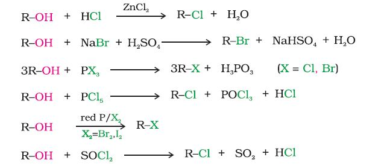

Alkyl halides are best prepared from alcohols, which are easily accessible. The hydroxyl group of an alcohol is replaced by halogen on reaction with concentrated halogen acids, phosphorus halides or thionyl chloride. Thionyl chloride is preferred because the other two products are escapable gases. Hence the reaction gives pure alkyl halides. Phosphorus tribromide and triiodide are usually generated in situ (produced in the reaction mixture) by the reaction of red phosphorus with bromine and iodine respectively. The preparation of alkyl chloride is carried out either by passing dry hydrogen chloride gas through a solution of alcohol or by heating a solution of alcohol in concentrated aqueous acid.

The reactions of primary and secondary alcohols with HX require the presence of a catalyst, ZnCl2. With tertiary alcohols, the reaction is conducted by simply shaking with concentrated HCl at room temperature. Constant boiling with HBr (48%) is used for preparing alkyl bromide. Good yields of R—I may be obtained by heating alcohols with sodium or potassium iodide in 95% phosphoric acid. The order of reactivity of alcohols with a given haloacid is 3°>2°>1°. The above method is not applicable for the preparation of aryl halides because the carbon-oxygen bond in phenols has a partial double bond character and is difficult to break being stronger than a single bond (Unit 11, Class XI).
(a) By free radical halogenation
Free radical chlorination or bromination of alkanes gives a complex mixture of isomeric mono- and polyhaloalkanes, which is difficult to separate as pure compounds. Consequently, the yield of any one compound is low (Unit 13, Class XI).
Example 10.3
Identify all the possible monochloro structural isomers expected to be formed on free radical monochlorination of (CH3)2CHCH2CH3.
Solution
In the given molecule, there are four different types of hydrogen atoms. Replacement of these hydrogen atoms will give the following
(b) By electrophilic substitution
Aryl chlorides and bromides can be easily prepared by electrophilic substitution of arenes with chlorine and bromine respectively in the presence of Lewis acid catalysts like iron or iron(III) chloride.
The ortho and para isomers can be easily separated due to large difference in their melting points. Reactions with iodine are reversible in nature and require the presence of an oxidising agent (HNO3, HIO4) to oxidise the HI formed during iodination. Fluoro compounds are not prepared by this method due to high reactivity of fluorine.
(c) Sandmeyer's reaction
When a primary aromatic amine, dissolved or suspended in cold aqueous mineral acid, is treated with sodium nitrite, a diazonium salt is formed (Unit 13, Class XII). Mixing the solution of freshly prepared diazonium salt with cuprous chloride or cuprous bromide results in the replacement of the diazonium group by –Cl or –Br.
Replacement of the diazonium group by iodine does not require the presence of cuprous halide and is done simply by shaking the diazonium salt with potassium iodide.
(d) From alkenes
(i) Addition of hydrogen halides: An alkene is converted to corresponding alkyl halide by reaction with hydrogen chloride, hydrogen bromide or hydrogen iodide.
Propene yields two products, however only one predominates as per Markovnikov's rule. (Unit 13, Class XI)
(ii) Addition of halogens: In the laboratory, addition of bromine in CCl4 to an alkene resulting in discharge of reddish brown colour of bromine constitutes an important method for the detection of double bond in a molecule. The addition results in the synthesis of vic-dibromides, which are colourless (Unit 13, Class XI).
Example 10.4Write the products of the following reactions:
Solution
Alkyl iodides are often prepared by the reaction of alkyl chlorides/ bromides with NaI in dry acetone. This reaction is known as Finkelstein reaction.
NaCl or NaBr thus formed is precipitated in dry acetone. It facilitates the forward reaction according to Le Chatelier's Principle.
The synthesis of alkyl fluorides is best accomplished by heating an alkyl chloride/bromide in the presence of a metallic fluoride such as AgF, Hg2F2, CoF2 or SbF3. The reaction is termed as Swarts reaction.